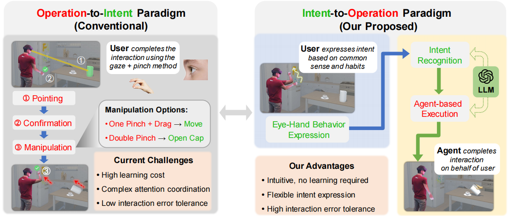

IEEE Transactions on Visualization and Computer Graphics (TVCG), 2026.
Zhimin Wang, Chenyu Gu, and Feng Lu

Eye-hand coordinated interaction is becoming a mainstream interaction modality in Virtual Reality (VR) user interfaces. Current paradigms for this multimodal interaction require users to learn predefined gestures and memorize multiple gesture-task associations, which can be summarized as an 'Operation-to-Intent' paradigm. This paradigm increases users' learning costs and has low interaction error tolerance. In this paper, we propose SIAgent, a novel 'Intent-to-Operation' framework allowing users to express interaction intents through natural eye-hand motions based on common sense and habits. Our system features two main components: (1) intent recognition that translates spatial interaction data into natural language and infers user intent, and (2) agent-based execution that generates an agent to execute corresponding tasks. This eliminates the need for gesture memorization and accommodates individual motion preferences with high error tolerance. We conduct two user studies across over 60 interaction tasks, comparing our method with two 'Operation-to-Intent' techniques. Results show our method achieves higher intent recognition accuracy than gaze + pinch interaction (97.2% vs 93.1%) while reducing arm fatigue and improving usability, and user preference. Another study verifies the function of eye gaze and hand motion channels in intent recognition. Our work offers valuable insights into enhancing VR interaction intelligence through intent-driven design.
Our related work:
Gaze-Vergence-Controlled See-Through Vision in Augmented Reality
Interaction With Gaze, Gesture, and Speech in a Flexibly Configurable Augmented Reality System
Edge-Guided Near-Eye Image Analysis for Head Mounted Displays